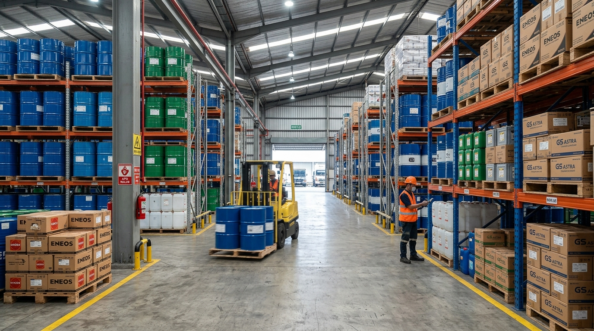
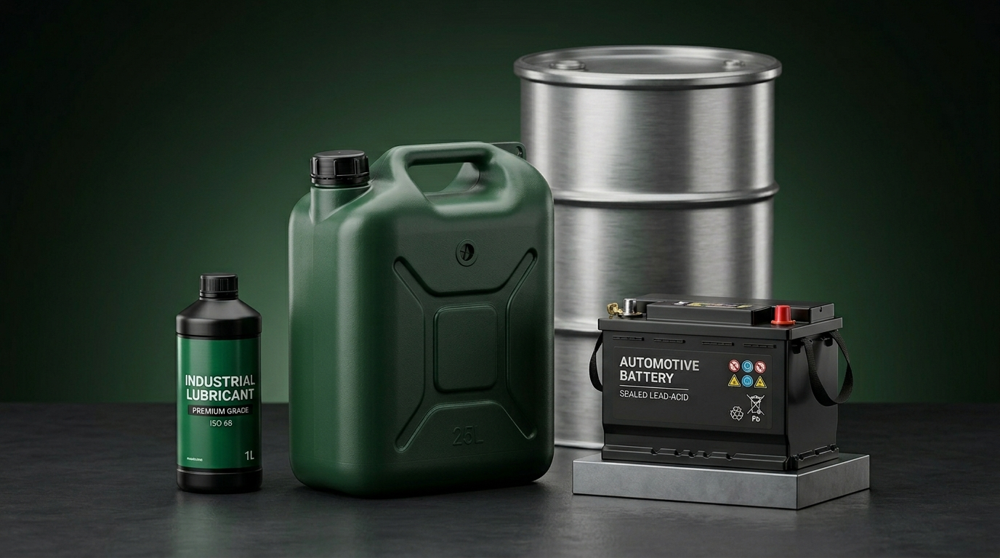
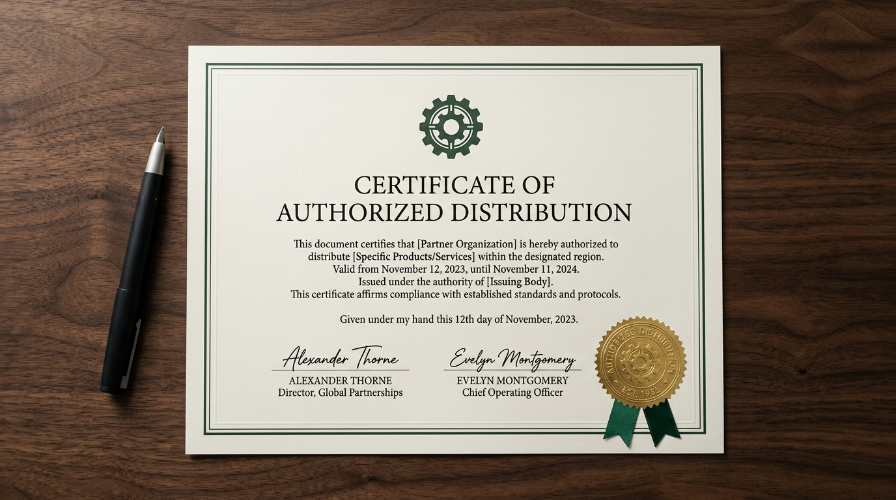
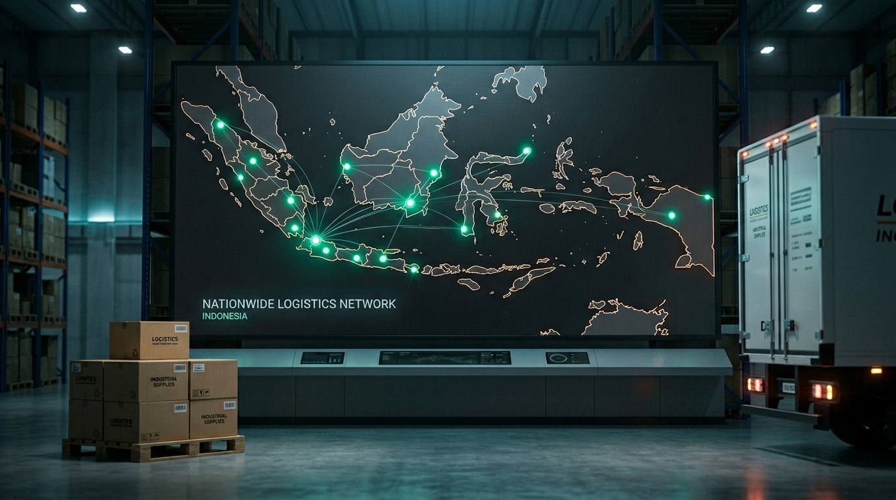

Maintenance
Update teks, gambar, backup ringan, dan pengecekan link.
 PT. ARTHA HANA PRANAWA
Website Company Profile
PT. ARTHA HANA PRANAWA
Website Company Profile
Proposal Website
Website ini disusun agar calon customer B2B cepat memahami profil perusahaan, brand prinsipal, kategori produk, cakupan industri, dan jalur kontak sales.

Masalah Yang Diselesaikan
Untuk bisnis distributor, website perlu menjawab pertanyaan dasar procurement dengan cepat: legalitas, brand resmi, kategori produk, area industri, dan kontak sales.
Informasi tersebar membuat calon buyer perlu bertanya ulang hal dasar.
Sinyal kepercayaan kurang kuat jika brand, legal, dan warehouse tidak ditampilkan jelas.
CTA kurang terlihat membuat inquiry lewat WhatsApp kurang terdorong.
Solusi Website
Nama perusahaan, positioning, dan peran distributor langsung terlihat.
Legal, warehouse, pengalaman sejak 2015, dan brand prinsipal dipertegas.
Petronas, Bosch, MIB, dan kategori pasokan disusun agar mudah dipindai.
CTA WhatsApp dan form inquiry diarahkan ke kebutuhan permintaan penawaran.



Elemen Website
Ruang Lingkup Rp500.000
Cara Kerja
Untuk website statis, proses idealnya 3 sampai 5 hari kerja setelah konten dan aset utama tersedia.
Pastikan tujuan, section, brand, dan kontak sales.
Bangun HTML, CSS, JS, asset, dan responsive layout.
Perbaiki teks, gambar, CTA, dan detail tampilan.
Upload website, cek link, dan serahkan source code.
Opsi Lanjutan
Update teks, gambar, backup ringan, dan pengecekan link.
About, product detail, brand page, atau landing campaign.
Daftar produk statis dengan kategori dan CTA quotation.
CMS, database, login, dan pengelolaan katalog mandiri.
Penawaran
Paket ini memberi fondasi online yang jelas: profil perusahaan, sinyal kepercayaan, produk, industri yang dilayani, dan jalur kontak sales.
"Untuk tahap awal, website company profile ini sudah siap digunakan sebagai fondasi digital perusahaan. Pengembangan seperti katalog produk, admin panel, atau maintenance rutin dapat dilanjutkan bertahap sesuai prioritas bisnis."